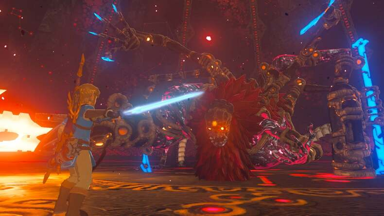
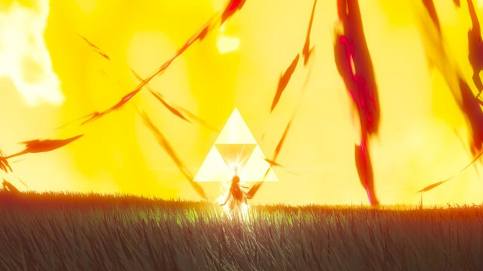
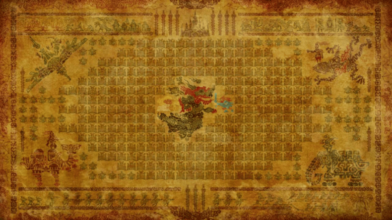

- 
- 
- 
História
Há 10 mil anos, o povo de Hyrule previu o retorno de uma terrível força maligna: a Calamidade Ganon, uma encarnação do ódio e do caos. Antecipando essa ameaça, as civilizações antigas usaram alta tecnologia para criar quatro Bestas Divinas e um exército de Guardiões mecânicos. Liderados por uma princesa com o poder sagrado da Triforce e um guerreiro escolhido pelo destino, eles derrotaram Ganon e selaram seu poder. Milênios depois, a história se repetiu, forçando o povo de Hyrule a repetir o plano com a união da Princesa Zelda, de Link, seu guardião real e dos quatro atuais campeões: Mipha, dos Zora; Daruk, dos Goron; Revali, dos Rito e Urbosa, dos Gerudo. Cada um pilotaria uma das Bestas Divinas. Entretanto, Ganon também tinha um plano, ele corrompeu as Bestas Divinas e os Guardiões, matando os campeões e dizimando o reino. Link foi mortalmente ferido, e Zelda, com seu poder finalmente despertando, usou a Triforce para selar Link em sono por 100 anos, enquanto ela própria enfrentava Ganon sozinha, mantendo-o contido no Castelo de Hyrule. Cem anos depois, Link desperta sem memória, guiado por uma voz misteriosa (a de Zelda). Aos poucos, ele descobre a verdade sobre a Calamidade, os campeões caídos e sua missão: derrotar Ganon e restaurar a paz no reino.